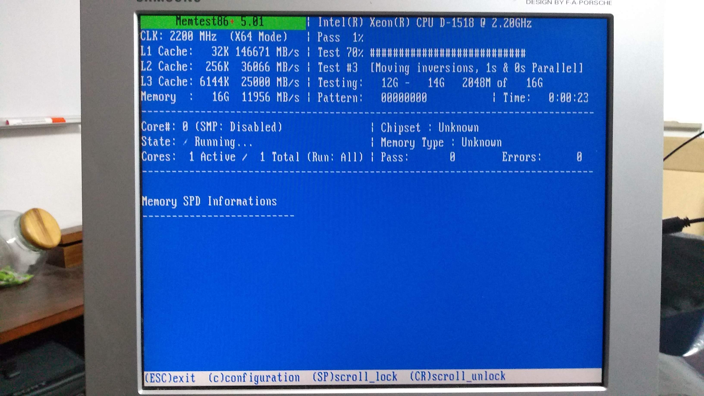

Ubuntu Server¶
We use Ubuntu Server 18.04 LTS which is supported until 2023. We download it the normal way from https://www.ubuntu.com/download/server . We check to make sure that the file is intact by running
echo "ea6ccb5b57813908c006f42f7ac8eaa4fc603883a2d07876cf9ed74610ba2f53 *ubuntu-18.04.2-live-server-amd64.iso" | sha256sum --check
which gives you an OK. Move to USB stick with Startup Disk Creator.
Memory Test¶
Before we can proceed, we use the Ubuntu USB stick’s memory test function to make sure that our RAM is okay.
This can take hours.
Basic installation¶
After the memory test, reboot and start installing the server.
Warning
During the install, do not select the option to install Docker. This will install Docker into a snap, which will then not work correctly. In fact, you probably want to avoid all snaps.
Afterwards, we update the system and reboot to be sure:
sudo apt update
sudo apt upgrade
sudo reboot
The name of the user we install as will be user1 in our examples.
Note
Most of the examples here have sudo in front of them to mark that
they have to be executed by the superuser. If you tire of this (and you
will), use
sudo su -
to switch to root permanently. Remember to exit as soon as possible.